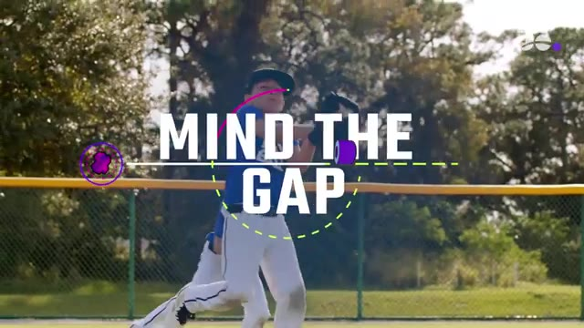
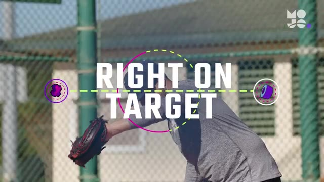
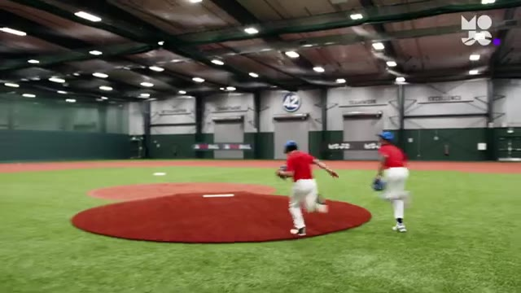
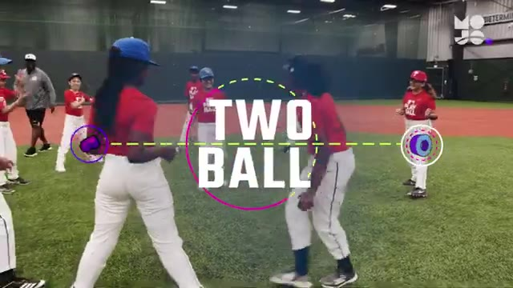
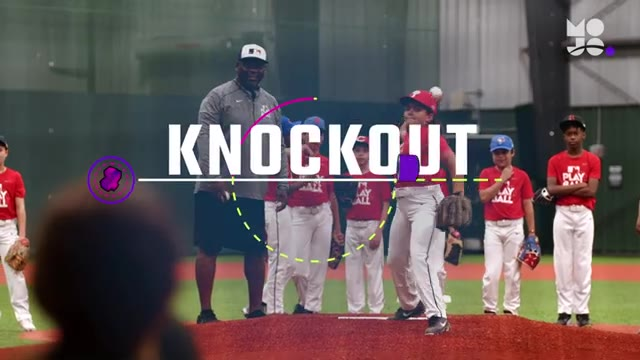
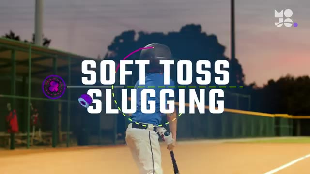
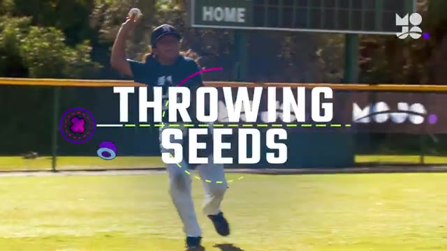
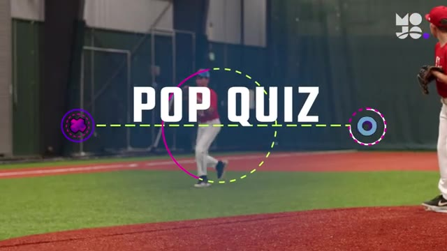

10 Best Baseball Drills for 7-8 Year Olds | Fun Youth Baseball Drills from the MOJO App
Auto-generated from the video. Tap a row to jump · tap "Watch" on any drill to open YouTube at the exact moment.
#01 Mind The Gap
▶ Watch on YouTube · 0:13

tracking fly balls in this game we call mind the gap place two cones in the outfield about 30 feet apart then divide the team into two equal groups lined up at each cone you stand in between the two cones about 20 feet away with a ball whether you're playing softball or baseball …
#02 Right On Target The
▶ Watch on YouTube · 4:10

strike zone in this game we call right on target the first pitcher in line climbs the mound with a baseball you set up behind the plate as the catcher here's how it looks on your call they begin delivering the ball to home plate have them throw 12 pitches trying to hit different …
#03 Four Corners
▶ Watch on YouTube · 5:13

in this game we call four corners divide your team into four groups and send each group to a different base everyone has a glove the first player in each group gets up on the bag whoever is at catcher gets a ball whether you're coaching baseball or softball the game is the same h…
#04 Two Ball
▶ Watch on YouTube · 6:32

this is two ball circle up your players so they're standing equidistant from each other without gloves you stand in the middle of the circle with two balls one in each hand whether you're playing softball or baseball the game is the same here's how it looks you up first big guy l…
#05 Knockout
▶ Watch on YouTube · 7:42

control in this game we call knockout [Music] line up pitchers behind the mound and give the first player a ball you stand behind home plate as the catcher here's how it looks the first player climbs the mound and throws a pitch nice pitch straight if it's a strike the pitcher is…
#06 Soft Toss Slugging Soft
▶ Watch on YouTube · 8:50

mechanics in this game we call soft toss slugging soft toss hitting is a great way for players to transition from hitting off a tee to hitting a moving target it also helps more advanced players focus on specific parts of their swing you set up four feet to the side of the plate …
#07 Throwing Seeds
▶ Watch on YouTube · 10:02

down at the plate in a game we call throwing seeds place a trash can on its side at home plate with the opening facing the field line your team up in the outfield and stand 50 feet away with a bat and a bucket of balls whether you're playing softball or baseball the game is the s…
#08 Pop Quiz
▶ Watch on YouTube · 11:13

each position in this game we call pop quiz your team takes the field with players at each position you stand in front of home with a bucket of balls whether you're playing softball or baseball the game is the same set a target number of consecutive pop-ups for the team to cast r…